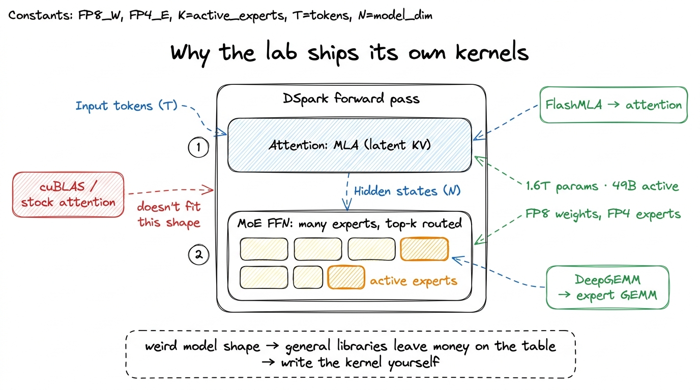
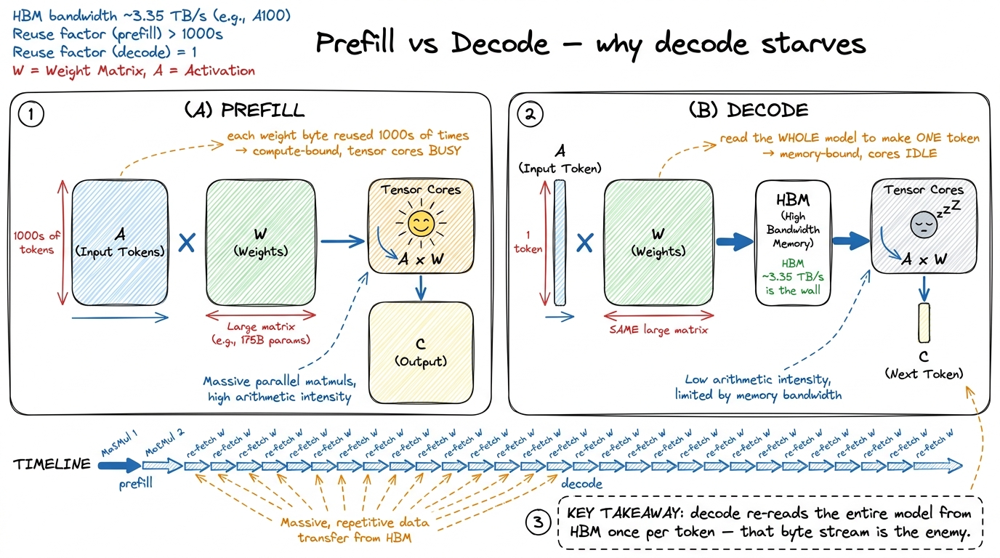
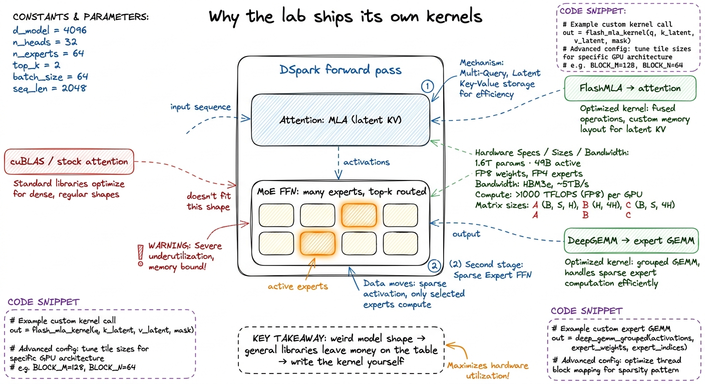
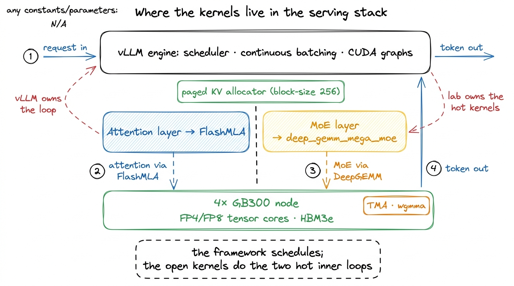
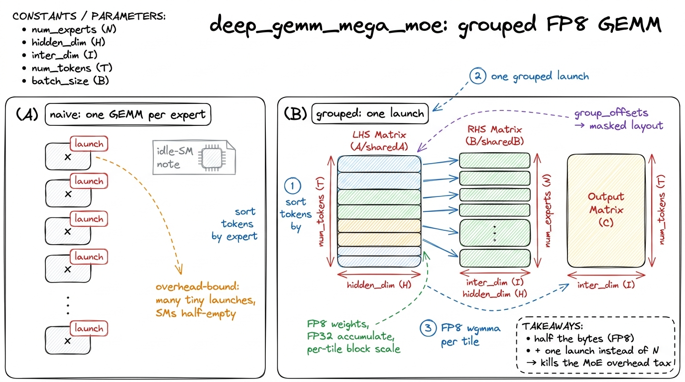
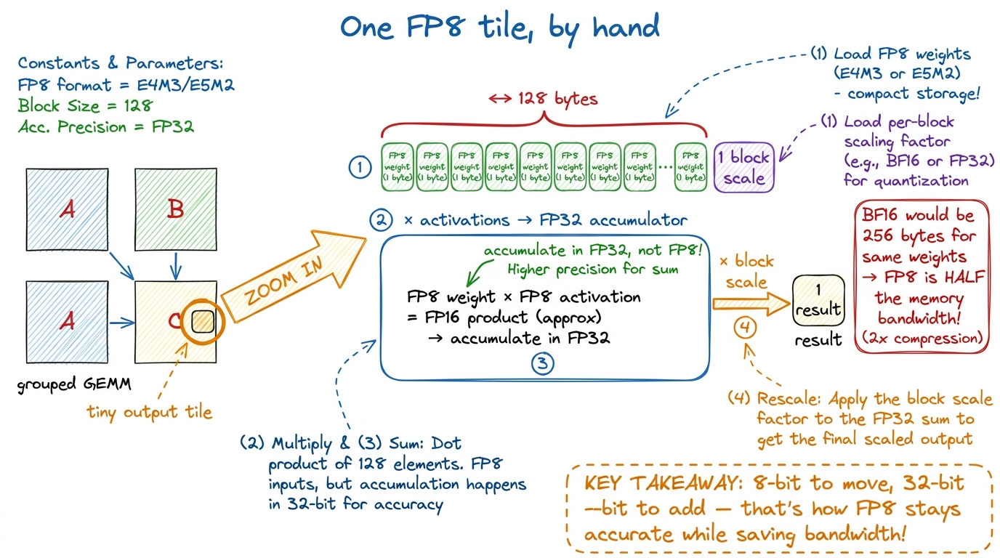
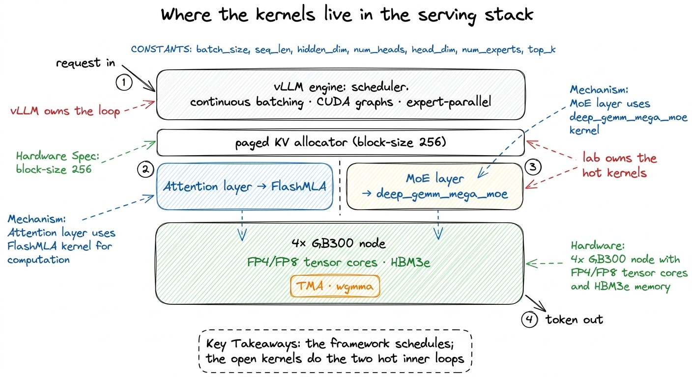
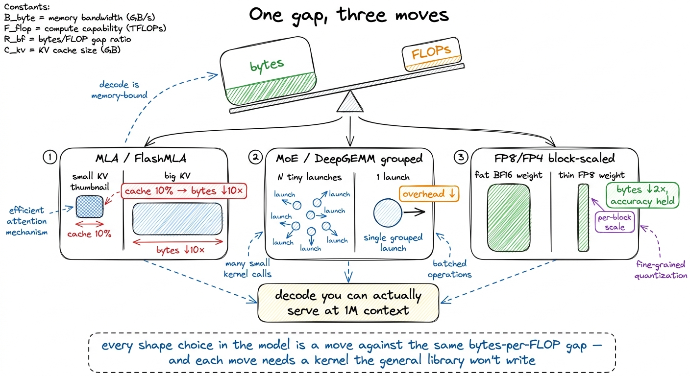

DeepSeek's open kernels: FlashMLA & DeepGEMM
Almost everything else in this course has been about making one kernel fast — we climbed the GEMM ladder one profile at a time, from a naive triple loop up to 93.7% of cuBLAS. This article asks a stranger question. Why would a frontier LLM lab — a company whose product is a model, not a compiler — spend engineer-years writing its own CUDA kernels and then give them away for free?
DeepSeek did exactly that. When they shipped their models they also open-sourced FlashMLA — a Hopper decode kernel for their particular attention variant — and DeepGEMM, a small, legible FP8 GEMM library. And here's the tell: the DSpark model card doesn't bury these in an appendix. It puts them in the launch command. For a model shaped like DSpark, the kernel is the product surface.
Before we can see why, we need one idea from the ground up: the difference between what a GPU is good at and what an LLM actually asks of it during inference. Get that gap clear, and both kernels — and the whole "write your own" thesis — fall out of it almost inevitably. So let's start there, from zero, and build up slowly. By the end you'll be able to read the FlashMLA and DeepGEMM source the way you now read a tiled matmul: knowing what the hardware is waiting on, what they changed, and what it buys.
The one number that decides everything: bytes per FLOP
Here's the fact the whole article hangs on. A modern GPU can do arithmetic far faster than it can fetch the numbers to do arithmetic on.
Let's make that concrete with napkin math. An H100 can do roughly 1,000 trillion FP16 operations per second on its tensor cores. Its memory — the big HBM stack where model weights live — delivers roughly 3.35 trillion bytes per second.1 H100 SXM: ~989 TFLOP/s dense FP16 tensor, ~3.35 TB/s HBM3. The B200 pushes both up (~2.25 PFLOP/s FP8-ish, ~8 TB/s HBM3e) but the ratio — hundreds of FLOPs per byte — barely moves. That ratio is the villain of this whole story. Divide: the chip can perform about 300 floating-point operations in the time it takes to fetch a single byte. So if a kernel reads one number and does one multiply on it, the tensor cores sit idle 299/300 of the time, tapping their feet, waiting for memory.
That single ratio is the central mental model for everything below. I'll call it the bytes-per-FLOP gap. Whenever a kernel is slow, ask first: is it starved for bytes, or starved for math? Almost always in LLM inference the answer is bytes.

figure rendering · A GPU can do ~300 operations in the time it takes to fetch one byte frNow — why is inference specifically byte-bound? To see it, we need to look at what actually happens when a model generates text.
Prefill versus decode: two totally different workloads
An LLM answers in two phases, and they could not be more different. This distinction gets its own full article, but here's the version we need.
Prefill is when you feed the model your prompt. All the prompt tokens go in at once, as a big batch. The matmuls are fat and square — thousands of rows against the weight matrices — so every byte of weight you fetch gets reused across thousands of tokens. Prefill is compute-bound. The tensor cores are busy. Good.
Decode is when the model writes its answer, one token at a time. And "one token at a time" is the whole problem. To produce the next token, the model must read every weight matrix in the network — hundreds of gigabytes — and multiply it by a single skinny vector of activations. One token's worth of work. Then it does it again for the next token. And again.
Let's do the math out loud, because it's the crux. Say the active weights you must read per token are W bytes. To generate 100 tokens you read W bytes 100 times — 100·W bytes moved — and the arithmetic per fetch is tiny, one vector against each matrix. You are re-fetching the entire model from HBM once per token. The tensor cores are starved. Decode is memory-bound, hard, and it is where a served model spends most of its life.2 This is why batching helps decode so much: if you decode 64 sequences at once, one weight fetch is amortized across 64 tokens. But latency-sensitive serving keeps batches small, and even large batches don't rescue the KV-cache reads, which are per-sequence. See batched decode.
So the optimization target for a serving kernel is not "peak TFLOP/s on a square matmul." It is bytes moved per token and latency per decode step. Hold that thought — it is the lens through which both DeepSeek kernels make sense.

figure rendering · Prefill reuses weights across many tokens (compute-bound); decode re-fWhy DSpark's shape breaks off-the-shelf libraries
Now meet the model. DSpark is 1.6 trillion parameters with about 49 billion activated per token — a Mixture of Experts (MoE).3 1.6T total, ~49B active. The whole point of MoE is that total parameters buy capacity while active parameters set the per-token cost — you pay for a 49B forward pass and get a 1.6T model's knowledge. Only a handful of "expert" sub-networks fire for any given token. Three shape choices define it, and each one, it turns out, is a place where a general-purpose library leaves money on the table.
- MoE FFN. The feed-forward layers are split into many experts; each token is routed to only a few. This sparsifies the compute — but it turns one big clean matmul into a swarm of small ones, each against a different weight matrix.
- MLA attention. Instead of caching a full key/value vector per attention head per token, DSpark caches a single small latent vector and reconstructs the keys and values on the fly. The card reports this hybrid attention needs only ~10% of the KV cache and ~27% of the single-token inference FLOPs of the prior version at a 1M-token context.4 The card credits a hybrid of "Compressed Sparse Attention" and "Heavily Compressed Attention" for the 10%-KV / 27%-FLOP figures at 1M context vs DeepSeek-V3.2. The engineering point stands: the cache is a fraction of the old size, so the dominant decode byte stream shrinks proportionally.
- FP8 / FP4 weights. Most parameters are stored in FP8 (8-bit float); the MoE experts go all the way down to FP4 (4-bit). Fewer bytes per weight means fewer bytes to move — directly attacking the decode wall.
Each of these is good for serving. But now look at what they do to a stock kernel. cuBLAS wants a big, contiguous, well-typed matmul — MoE hands it dozens of tiny scattered ones. A FlashAttention kernel wants keys and values already sitting in HBM in a clean layout — MLA hands it a compressed latent it must first reconstruct. An off-the-shelf FP8 path wants uniform tensors — DSpark hands it a mix of FP8 and FP4 with per-block scales. The model's shape falls outside the sweet spot every general library was tuned for.
That is the whole thesis in one sentence: when the workload is weird enough, the only person who will write your kernel is you. And DeepSeek proved it by shipping the two kernels that plug the two gaps. Here's how the card wires them into vLLM:
vllm serve deepseek-ai/DeepSeek-V4-Pro-DSpark \
--trust-remote-code --kv-cache-dtype fp8 --block-size 256 \
--data-parallel-size 4 --enable-expert-parallel \
--moe-backend deep_gemm_mega_moe \
--speculative-config '{"method":"dspark","num_speculative_tokens":7}' \
--attention-config '{"use_fp4_indexer_cache": true}'Read that command as a list of kernel decisions, not settings. --moe-backend deep_gemm_mega_moe selects the DeepGEMM path for the expert matmuls. --kv-cache-dtype fp8 and --block-size 256 set up the paged, quantized KV layout MLA needs. --attention-config use_fp4_indexer_cache shrinks the attention index. --enable-expert-parallel shards the experts across GPUs. Even --speculative-config — the DSpark speculative decoder drafting 7 tokens ahead — is there to attack the same decode-latency wall from another angle. This isn't configuration. It's kernel engineering surfacing as a CLI.

figure rendering · The two open kernels each target one half of the forward pass that offLet's take the two halves in turn. Attention first.
FlashMLA: attention when the KV cache is compressed
To feel why MLA needs a special kernel, we have to remember what an attention kernel normally does, and why the KV cache is such a monster. This is covered in depth in KV cache and paged attention; here's the essence.
When a model generates token number 1000, it must "attend" to all 999 previous tokens — compare the current token against each of them. To avoid recomputing the past from scratch every step, the model caches a key vector and a value vector for every past token. That's the KV cache. In vanilla multi-head attention it stores a full key and value per attention head, per token. At long context this cache is enormous, and — here's the killer — during decode the kernel reads the entire cache back on every single step. For a million-token context, that read is the single biggest byte stream in the whole forward pass. Straight into the bytes-per-FLOP wall.
Multi-head Latent Attention (MLA) is DeepSeek's answer. Instead of caching full per-head keys and values, it caches one small low-rank latent vector per token, and reconstructs the per-head K and V on the fly by projecting that latent back up to full size.5 The card notes the optimized cache needs roughly 10% of the KV memory of the prior version at the same context. That is the latent compression paying off directly as bytes not moved from HBM. Think of it as storing a compressed thumbnail and un-zipping it when you need it — but un-zipping happens inside the kernel, in registers and shared memory, where bandwidth is effectively free. You pay a little extra math (the up-projection) to avoid moving a lot of bytes. Given a 300:1 gap, that is a trade you take every time.
Let me make the win concrete with a tiny by-hand example. Suppose a conventional layout stores 512 bytes of K plus V per token per layer. Over a 100,000-token context that's 512 × 100,000 = 51.2 MB per layer to read back — every decode step. MLA storing ~10% means ~51 bytes per token, so ~5.1 MB per layer per step. Same context, same output, but ~46 MB less HBM traffic per layer per token. Multiply by every layer and every generated token and the savings compound into a decode you can actually serve at a million-token context.
But cheap bytes come with a hard kernel. FlashAttention-style kernels — the ones we built in the FlashAttention series — assume K and V are already in HBM in a clean layout you can stream straight through the tensor cores. MLA breaks two of those assumptions at once:
- The cache holds a compressed latent, not usable K/V. The kernel must up-project it before it can compute anything.
- The latent lives in a paged KV cache — the blocks are scattered across physical memory in fixed-size pages (the card runs
--block-size 256) rather than sitting contiguously.6 Paged KV, from the PagedAttention line of work, is what lets a server pack many sequences of wildly different lengths into one GPU without fragmentation. The cost is that the kernel must gather non-contiguous pages, which a naive attention kernel is not built to do.
So FlashMLA has to fuse three things a stock kernel keeps separate: gather the scattered latent pages, up-project them to per-head K and V on-chip, and attend (the softmax-and-accumulate) — all without ever materializing the full-size KV back in HBM. If it spilled the reconstructed K/V to HBM, it would throw away the entire savings. The reconstruction must stay on-chip.
Here's the decode-step inner loop, one query token at a time:
# FlashMLA decode, one query token, streaming over KV pages
acc = 0 # output accumulator, per head
denom = 0 # running softmax denominator
m = -inf # running max, for numerically-stable softmax
for page in kv_pages(seq): # scattered physical pages
latent = load(page) # low-rank cached vector (small!)
K, V = up_project(latent) # reconstruct per-head K, V on-chip
s = q @ K.T * scale # attention logits
m_new = max(m, rowmax(s)) # online softmax rescale
p = exp(s - m_new)
acc = acc * exp(m - m_new) + p @ V
denom = denom * exp(m - m_new) + rowsum(p)
m = m_new
out = acc / denomThe up_project line is the whole trick. Because the cached latent is tiny, the byte traffic from HBM per token is tiny — you are moving the compressed representation, not the reconstructed K and V. The reconstruction, the scores, and the accumulation all happen in registers and shared memory. And notice the online-softmax dance (m_new, the rescale of acc and denom) — that's the same numerically-stable streaming trick from FlashAttention, letting the kernel process one page at a time without ever holding the full attention matrix. FlashMLA is FlashAttention with a decompression step welded into the front.
On Hopper this leans on exactly the machinery the rest of this course built toward: Tensor Memory Accelerator (TMA) bulk copies to pull pages into shared memory asynchronously, warpgroup matmul (wgmma, from the wgmma article) for the up-projection and the score computation, and enough software pipelining that the copies and the math overlap — so the SM never stalls waiting on the next page to arrive.

figure rendering · FlashMLA fuses page-gather, up-projection, and attention so only the sWhy does the overlap matter so much? Because if the kernel copied a page, then waited, then computed, then waited, then copied the next — it would spend most of its time waiting, and we'd be back to a memory-bound stall. The pipeline hides the copy of page i+1 behind the math of page i. The tensor cores stay fed. This is the same double-buffering idea from the GEMM cp.async article, now applied to attention pages. Everything we learned climbing the ladder shows up here, just rearranged.
The payoff is measured in the one currency that matters for decode: bytes moved. By keeping the KV cache at roughly a tenth of a conventional layout and never spilling the reconstructed K/V to HBM, FlashMLA turns the single biggest bandwidth sink in long-context decode into a small one — a ~10× reduction in the dominant byte stream. On a memory-bound workload, cutting the dominant byte stream by 10× is close to a 10× headroom win for that stage. That's the kernel earning its keep.
DeepGEMM: FP8 experts, and nothing you can't read
Now the other half of the forward pass: the MoE feed-forward. Each token routes to a small set of experts, and each expert is a pair of GEMMs against a large weight matrix. With 49B active parameters, these expert GEMMs are where the FLOPs — and the weight bytes — actually live. DeepGEMM is DeepSeek's library for running them, and its design thesis is almost aggressively simple: clean, FP8, and small enough to read. The whole core is a few hundred lines of CUDA. It does one thing — FP8 GEMM with fine-grained scaling, including the grouped/masked variants MoE needs — and it does it without the sprawling template metaprogramming that makes production GEMM libraries (CUTLASS and friends) so hard to read.
There are two distinct wins packed into DeepGEMM, and it's worth pulling them apart because they attack two different bottlenecks. Let's take them one at a time.
Win one: FP8 halves the bytes
Why FP8, and why write a new library for it? During memory-bound decode, every weight is fetched from HBM per token. Store it in FP8 instead of BF16 and you move half the bytes. The card actually specifies a mixed regime — MoE experts in FP4 (4-bit), most other parameters in FP8 (8-bit); FP4 is the block-scaled e2m1 format (NVFP4-style) that Blackwell's tensor cores accelerate natively, a big reason the card targets GB300 nodes rather than H100. On a byte-bound stage, halving the bytes is close to doubling the throughput of that stage. That's the near-linear win.
But there's a catch, and it's the reason you can't just cast to FP8 and call it done. FP8 has tiny dynamic range — only a few bits of exponent. Squeeze a whole big weight matrix into one scale factor and the small values round to zero while the large ones saturate. Accuracy craters. The fix is fine-grained block scaling: instead of one scale for the whole tensor, use a separate scale for each small tile (say, each 128-element block).7 This is exactly the microscaling idea — a shared exponent per small block — that the quantization kernels article develops. The block is small enough that all its values share a similar magnitude, so one scale preserves them; big enough that the scale metadata is cheap. Each block gets a scale that fits its values, so both the tiny and the huge weights survive the trip to 8 bits.
The kernel work is: load the FP8 weights, load the per-block scales, do the tensor-core matmul in FP8, but accumulate in FP32 and rescale per block. Keeping the accumulator in full precision is what saves the accuracy — the errors don't compound across the reduction. On Hopper this is the FP8 wgmma instruction with an FP32 accumulator; on Blackwell the FP4 path uses the native microscaled formats. Fine-grained scaling is the difference between FP8 that works and FP8 that quietly wrecks your model.
Win two: grouped GEMM kills the launch storm
The second win attacks a bottleneck we haven't leaned on yet in this article: overhead — the third of the three regimes. Here's the problem MoE creates.
Naively, you'd run the experts by launching one GEMM per active expert. But each launch has a fixed cost — the CPU tells the GPU "start this kernel," there's scheduling latency, and there's a "tail" where the last few thread blocks finish while the SMs drain. For a big matmul that overhead is a rounding error. But MoE expert GEMMs are small — one expert only sees the handful of tokens routed to it. So you get a swarm of tiny kernels, each too small to fill the GPU, each paying full launch and tail overhead. The SMs spend more time starting and stopping kernels than computing. This is the overhead regime in its purest form.8 This is the same insight as fusing many small element-wise kernels into one launch (see operator fusion), applied to MoE. When the individual GEMMs are small and numerous, launch and tail overhead dominate the actual math — batching them into one kernel is the cure. The anatomy of that fixed per-launch cost is dissected in kernel launch anatomy.
The deep_gemm_mega_moe backend named in the vLLM command is the fix. Instead of N launches, it fires one grouped GEMM that packs all the active experts' matmuls into a single kernel. The trick is layout: the tokens are sorted by which expert they routed to, so all of expert 0's tokens sit contiguously, then all of expert 1's, and so on. A group_offsets array marks where each expert's slice begins. Inside the one kernel, each tile looks up which expert range it's in and multiplies against that expert's weights — a masked/segmented layout. One launch, every SM busy across the whole expert batch, the tail paid once.
# grouped MoE GEMM — one launch for all active experts
# tokens are sorted by expert; group_offsets marks each expert's slice
deep_gemm.grouped_gemm_fp8(
lhs = tokens_fp8, # [num_tokens, hidden], block-scaled
rhs = expert_w_fp8, # [num_experts, hidden, inter], FP8/FP4
out = y, # [num_tokens, inter], FP32 accumulate
group_offs = group_offsets, # per-expert row ranges (masked layout)
scales = block_scales, # fine-grained scale per tile
)Let's put a number on the launch win, by hand. Suppose 8 experts are active and each per-expert GEMM does ~20 µs of real math but pays ~5 µs of launch+tail overhead. Eight separate launches: 8 × (20 + 5) = 200 µs, of which 40 µs — a full 20% — is pure overhead, and worse, each launch under-fills the GPU. One grouped launch: 8 × 20 + 5 = 165 µs, overhead paid once. That's an ~18% wall-clock cut before you even count the better SM occupancy from a single well-sized kernel. On a decode step that runs thousands of times, that compounds hard.
Combine the two wins and the MoE FFN — nominally the heaviest part of a 1.6T model — moves half the bytes (FP8/FP4) and launches a fraction of the kernels (grouped). It's a two-front attack: the byte front and the overhead front, in one small readable library.

figure rendering · DeepGEMM packs all active experts into one FP8 kernel, trading a swarmZooming in on one tile
To make the FP8-with-scaling concrete, let's zoom all the way in to a single output tile and walk the numbers by hand — the way we did on the GEMM ladder. Say a tile computes a 128-wide dot product for one output element. The weights arrive as 128 FP8 values (that's 128 bytes) plus one shared FP8 scale for the block. The kernel:
- loads the 128 FP8 weights and the block scale,
- multiplies each weight by the matching activation on the tensor core,
- sums the 128 products into an FP32 accumulator (not FP8 — this is the accuracy-saving step),
- multiplies the FP32 result by the block scale to get the true value.
Count the bytes: 128 bytes of weight for the tile versus 256 bytes if it were BF16. Half the HBM traffic, and the FP32 accumulator means the 128-way sum doesn't lose precision. That's the entire FP8-block-scaling idea in four steps — no template metaprogramming required. This is exactly why DeepGEMM's readability is a feature, not a vanity: the honest four-step version is the production kernel.

figure rendering · One tile: 128 FP8 weight-bytes (half of BF16) multiplied and summed inHow it all plugs into serving
Neither kernel is a research artifact you admire and shelve. They are load-bearing in the serving path, and the integration is the interesting part — because it shows a clean division of labor that anyone can copy.
vLLM owns the outer loop: scheduling requests, the paged KV allocator, continuous batching, CUDA graph capture, expert-parallel sharding across the 4 GPUs. It does not try to write the two hottest inner kernels itself. Instead it delegates them through the backend flags. FlashMLA slots in behind the attention config, consuming the very same paged KV blocks vLLM's allocator hands out — same --block-size 256 pages. DeepGEMM slots in behind --moe-backend, consuming the routed, expert-sorted tokens the MoE layer produces. The interfaces line up because they were designed to: paged KV, expert-parallel layout, FP8 tensors.
That's the deep reason the open kernels matter beyond DeepSeek. Because they speak vLLM's interfaces, anyone serving an MLA-plus-MoE model can adopt them without rewriting their stack — you flip two flags. And because DeepGEMM in particular is small and readable, it doubles as a teaching artifact: it is the honest, few-hundred-line answer to "how do you actually do FP8 GEMM with block scaling on Hopper?", which is exactly the kind of thing this course exists to demystify.

figure rendering · vLLM owns the serving loop and delegates the two hottest inner kernelsThe takeaway: read the model, find the byte stream, write the kernel
Step back and the pattern is clean, and it's the same pattern the whole way down. Start from one fact — the bytes-per-FLOP gap, ~300 FLOPs per byte on an H100. Follow it into decode, where the model is re-fetched from HBM once per token and the workload is memory-bound. Then look at DSpark's shape and see that every one of its choices is a move in that byte war:
- MLA compresses the KV cache to ~10% → the dominant decode byte stream shrinks ~10×. FlashMLA is the kernel that makes the compressed layout actually fast, by reconstructing K/V on-chip and never spilling.
- MoE sparsifies the FFN → fewer active FLOPs, but a launch storm of tiny GEMMs. DeepGEMM's grouped kernel folds them into one launch.
- FP8/FP4 halves (or quarters) the weight bytes → near-linear decode win, if you scale per block to hold accuracy. DeepGEMM's fine-grained scaling does exactly that.

figure rendering · The whole design collapses to one idea: decode is byte-bound, and MLA,The lesson for a kernel engineer is that the frontier is no longer "make GEMM fast" in the abstract — cuBLAS and the ladder we climbed already do that, at 93.7% and rising. The frontier is "make this specific model's forward pass fast": read the architecture, find the byte stream and the launch storm that general libraries miss, and write the fused kernel that closes them. DeepSeek open-sourced their homework. And here's the encouraging part — everything we built along the way, coalescing, shared-memory tiling, wgmma, TMA, double-buffered pipelining, online softmax, FP8 quantization — is exactly the vocabulary you need to read FlashMLA and DeepGEMM today, and to write the next one tomorrow. The model tells you where the bytes are. The rest is the craft you've been practicing this whole course.